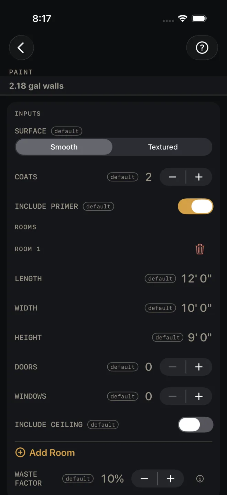
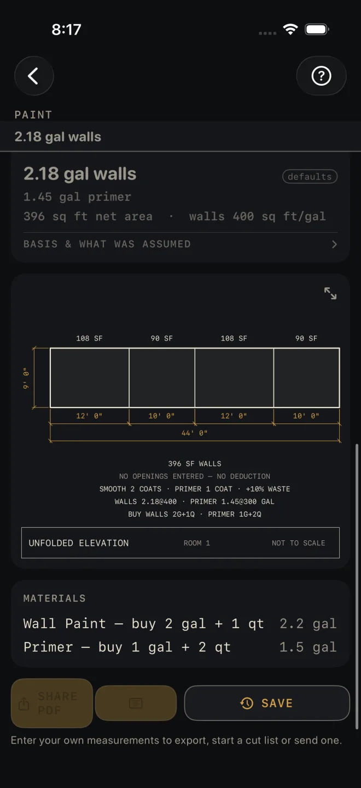

Paint
What it's for
Working out how much paint and primer to buy for a list of rooms. You walk away with gallons for the walls, gallons for any ceilings, primer, and a material list that turns each figure into cans to buy. The drawing unfolds the first room's walls into one strip so you can check the areas. It is an order quantity, not a code check.
Step by step
The example is the screen as it opens: one 12' by 10' room with 9' walls, two coats on a smooth surface, primer on, no openings entered and no ceiling.

1 2 3 4 6- SURFACE — Smooth or Textured. A textured wall takes more paint, so the wall coverage rate drops when you pick it. Leave it at Smooth.
- COATS — finish coats on the walls and ceilings. 2 here.
- INCLUDE PRIMER — on adds one coat of primer over everything you are painting. Turn it off for a repaint that does not need it.
- Under ROOMS, measure the room wall to wall along the floor for LENGTH (12' 0") and WIDTH (10' 0"), and floor to ceiling for HEIGHT (9' 0").
- DOORS and WINDOWS — count the openings. Each one takes a standard allowance off the wall area. Both open at 0, which paints the walls as if they were solid.
- INCLUDE CEILING — on if you are painting the lid in this room. It opens off.
- For another room, tap Add Room. The trash can at the top right of a block removes that room.
- WASTE FACTOR — the extra for the tray, the roller and touch-up, in steps of 5%. It opens at 10%.
- Read RESULTS: 2.18 gal walls, 1.45 gal primer, 396 sq ft net area, walls 400 sq ft/gal.
- Check the unfolded elevation: four walls, 108, 90, 108 and 90 SF, 44' 0" around.
- Read MATERIALS for the cans: wall paint, buy 2 gal + 1 qt; primer, buy 1 gal + 2 qt. BASIS & WHAT WAS ASSUMED states the coverage per gallon for each surface, the area taken off per door and window, and the rounding to gallons and quarts.
- Save or share the job with the buttons at the foot of the screen.

8 9 10 11 12Reading the results
The headline is wall paint in gallons for every room together, with your coats and waste in it. It also shows in a strip under the title whenever the results card is scrolled off screen.
Ceiling and primer. A ceiling line appears only when at least one room has INCLUDE CEILING on. The primer line appears only while INCLUDE PRIMER is on. Primer is one coat, whatever COATS says — the drawing notes read PRIMER 1 COAT.
Net area and coverage. Net area is walls plus included ceilings, after the door and window allowances. The rate beside it is labelled walls on purpose: it is the wall paint rate only. The drawing prints each rate on the figure it produced — in the example WALLS 2.18@400 · PRIMER 1.45@300 GAL. Check those against the can you are buying. If your paint covers less, raise WASTE FACTOR to suit.
The drawing is room 1 only, its four walls laid out flat in one strip, each with its area above and its length below. With no openings entered it says so: NO OPENINGS ENTERED — NO DEDUCTION. The gallons in the notes are for the whole job, not just room 1. Pinch to zoom, or tap the expand button at the top right to open it full screen. See Reading the drawing.
Materials rounds each figure to cans: gallons plus quarts to buy, with the quantity beside it.
SHARE PDF sends a sheet with the drawing, your inputs and the material list. The list button beside it sends the material list alone. SAVE puts the job in History. SHARE PDF and the list button stay dim until you change at least one input. SAVE stays lit, but while every input is still a default a tap only answers Enter your job's numbers first and saves nothing.
Common mistakes
- Leaving DOORS and WINDOWS at 0. Unlike the Drywall calculator, this one does take openings off the area, but only if you count them.
- Forgetting INCLUDE CEILING. It opens off, and it is set room by room.
- Reading the wall rate as the rate for everything. Primer and ceilings run at their own rates, printed on the drawing.
- Expecting trim paint. This screen covers walls, ceilings and primer. Doors, casing and base are a separate buy.
Related
- Drywall — the same rooms, one trade earlier
- Trim
- Siding — for the outside of the building
- Cut sheets and 1:1 templates
- Saving and History
- Reading the drawing